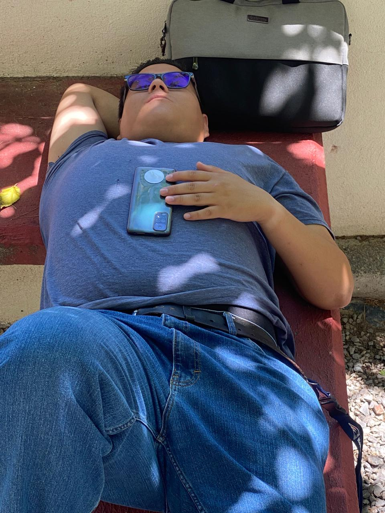

Desarrollador Web & Soporte Técnico
UI · osTicket · Progressive Web Apps
Desarrollador web con experiencia en personalización de interfaces, soporte técnico y adaptación de sistemas de atención al usuario. Enfocado en crear soluciones modernas, accesibles y centradas en la experiencia del usuario.
Con conocimientos en HTML, CSS y JavaScript, así como en la personalización de plataformas como osTicket, cuidando siempre la separación entre la interfaz de clientes y el panel administrativo.
Modificación visual y funcional del portal de usuarios, mejorando formularios, estilos y usabilidad sin afectar el panel de agentes.
Configuración de flujos de soporte, formularios de contacto y atención a usuarios en entornos web.
Desarrollo de landing page moderna y responsiva, optimizada para funcionar como base de una Progressive Web App.
Disponible para proyectos académicos y soporte técnico
El formulario puede integrarse con correo o sistema de tickets.